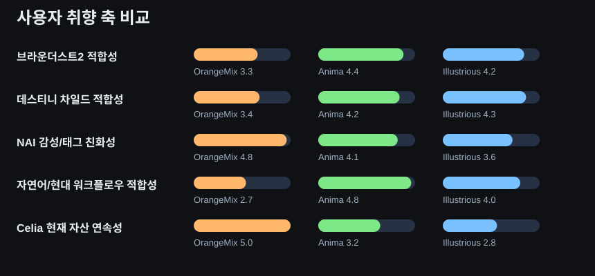

Celia 차세대 스택 후보 조사
설치·다운로드·실험 없이, 사용자가 추가 제공한 링크와 공개 모델 메타데이터를 기반으로 OrangeMix / Anima / Illustrious 생태계를 비교한 조사 보고서입니다.
1장. 요약
비교 결과
사용자 취향은 순수 OrangeMix + animevae 축보다, Anima/Illustrious 축으로 확장되는 방향에 더 가까운 것으로 판단됩니다. 다만 완전 전환보다는 Anima를 먼저 일부 도입하고, Illustrious는 보조 참조·후보군으로 유지하는 편이 안전합니다.
최종 권장 방향
Anima 일부 도입
- 사용자가 추가 제공한 링크 군집 자체가 Anima + Illustrious 중심이며, 단순 LoRA보다 워크플로우/생태계 자료 비중이 높습니다.
- 아카라이브 실사용 글에서는 Anima의 자연어 이해, 다중 인물 제어, 1024~1536 해상도 안정성, 속도/품질 장점이 반복적으로 언급됩니다.
- Anima+IL 워크플로우 글은 “Anima로 초안을 잡고 IL이 디테일을 다듬는다”는 역할 분담을 명시합니다.
- BD2/DC/모바일 게임풍에 가까운 광택 피부·세련된 미소녀 미감은 Anima B1 Nikke Style LoRA 같은 최신 Anima 자산과 더 직접적으로 연결됩니다.
- 현 Celia 기본 스택은 안정적이지만 SD1.5/OrangeMix 자산 중심이어서, 차세대 스타일 확장성은 Anima/Illustrious 쪽이 더 큽니다.

점수는 제공 링크의 모델 설명, 아카라이브 커뮤니티 반응, 현재 Celia 자산 연속성을 종합한 상대평가입니다.
2장. OrangeMix 생태계
현재 Celia의 안정 운영 축이며 NAI 계열 감성 유지에는 가장 유리합니다. 다만 차세대 고해상도·자연어·모바일 게임풍 확장성은 제한적입니다.
| 모델 | 분류 | 베이스 | 권장 워크플로우 | 권장 사용 목적 | 대표 그림체 | OrangeMix 대비 장단점 | 다운로드 |
|---|---|---|---|---|---|---|---|
| OrangeMixs AOM3A1 | Checkpoint | SD 1.5 / NAI-adjacent | SD1.5 + animevae(or orangemix.vae) + LoRA 보조. 현재 Celia 기본 축. | NAI 계열 감성, 익숙한 SD1.5 애니 그림체, 가벼운 로컬 운용. | NAI/Anything 계열 2D 애니, 익숙한 태그 기반 조작. | 기준축 | - |
| animevae / orangemix.vae | VAE | SD 1.5 / NAI-adjacent | OrangeMix/AOM 계열과 결합, 채도·밝기 안정화 역할. | 기존 OrangeMix 색감 유지. | NAI/Anything 계열 VAE 톤. | 기준 VAE | - |
근거: Hugging Face OrangeMixs README, NovelAI 캐릭터 일관성 문서, 현재 Celia 기본 스택.
3장. Anima 생태계
가장 강한 차세대 후보입니다. 자연어 이해, 다중 인물 제어, 고해상도, 최신 스타일 LoRA 연결성이 강점입니다.
| 모델 | 분류 | 베이스 | 권장 워크플로우 | 권장 사용 목적 | 대표 그림체 | OrangeMix 대비 장단점 | 다운로드 |
|---|---|---|---|---|---|---|---|
| WAI-ANIMA | Checkpoint | Anima | Anima 단독 또는 Anima 초안용 베이스. 자연어/태그 혼용. | 범용 Anima 스타팅 포인트. | 범용 고해상도 애니·미소녀. | 해상도·자연어 우위, 기존 SD1.5 LoRA 자산은 약함. | 843 |
| NTRMix | STYLE | LoRA | Anima | Anima 베이스에 스타일 LoRA로 얹는 형태. | NTR MIX 감성을 Anima에 이식. | Illustrious/NTR 계열 감성 보정. | 스타일 이식력은 좋지만 안정성은 베이스 의존. | 642 |
| AnimaYume | Checkpoint | Anima | Anima 파인튜닝 단독 사용. | 고품질 일러스트·미소녀 중심. | 부드럽고 미학적 애니 일러스트. | 더 큰 해상도와 현대적 질감, SD1.5보다 무거움. | 7,755 |
| AnimaIka | Checkpoint | Anima | Forge/ComfyUI 호환. 프롬프트 가이드 준수형. | 선명한 선화와 품질 안정성. | 깨끗한 선과 발색 중심의 애니. | 선명도 우세, 익숙한 SD1.5 프롬 감각과는 다름. | 1,846 |
| Hakushi Mix Anima | Checkpoint | Anima | 여러 화풍 블렌드 전제. 조합 변화폭 큼. | 다양한 화풍 혼합 실험용. | 블랭크 캔버스형 범용 애니. | 유연성 우세, 결과 통제는 더 어렵다. | 749 |
| QwenimageVAE_liquid1087 | VAE | Anima | Anima용 외부 VAE. | 색 균형·라인과 채색 경계 개선. | 채색 경계 깔끔, 애니 음영 정리. | 현대적 SDXL/Anima 톤, SD1.5용과 직접 호환 아님. | 1,400 |
| SinGlo-Anima | Checkpoint | Anima | Anima Preview 3 + SinGlo 계열 혼합. | 어둡고 분위기 있는 감성. | 다크, emo, moody. | 무드 연출 우세, 범용성은 낮다. | 111 |
| CottonAnima | Checkpoint | Anima | Anima 기반 머지. | 안정적인 범용 애니 출력. | 부드럽고 안정적인 애니. | 대형 해상도와 최신 렌더링 우세, SD1.5 속도/자산은 불리. | 3,453 |
| Anima B1 Nikke Style LoRA | LoRA | Anima | Anima Base v1.0 + 스타일 LoRA, pale/shiny/wet skin 태그 병행. | NIKKE/모바일 게임풍 피부 질감·광택. | 광택 피부, 세련된 모바일 게임풍. | BD2/DC 인접 미감에 강함, 차세대 취향 적중 가능성 높음. | 1,584 |
아카라이브 실사용 근거: “초보자용 아니마+IL 워크플로우 VER.3”, “Anima 계열 체크포인트 사용 중인 분들께 질문 있음!”, “SDXL+Anima 써보니 상상 이상이네”, “이제 anima 의 시대인 겁니까?”.
4장. Illustrious 생태계
성숙한 체크포인트/LoRA 풀과 범용성이 강점입니다. 다만 커뮤니티 근거상 Anima 초안 + IL 디테일링 구조가 더 자주 언급됩니다.
| 모델 | 분류 | 베이스 | 권장 워크플로우 | 권장 사용 목적 | 대표 그림체 | OrangeMix 대비 장단점 | 다운로드 |
|---|---|---|---|---|---|---|---|
| WAI-illustrious-SDXL | Checkpoint | Illustrious | Illustrious 범용 입문 베이스. | LoRA 없이도 캐릭터·의상 데이터 활용 폭 큼. | 범용 고품질 IL 애니. | 범용성과 해상도 우세, 기존 SD1.5 자산 이식은 별도 검토 필요. | 76,121 |
| NTR MIX | Checkpoint | Illustrious | ComfyUI 권장. 품질 태그와 step/cfg 세팅 중요. | 실전형 범용 IL 메인 베이스. | 역동적 구도, 예쁜 색감, 범용 미소녀. | 현세대 메인 모델 감각, ReForge/Forge 호환성은 불확실. | 89,449 |
| IllumiYume XL | Checkpoint | Illustrious | Illustrious 기반 단독. | Danbooru2023·Illustrious 계열 미학 강화. | 밝고 미학적인 일러스트. | 디테일/대형 캔버스 우세, SD1.5 경량성은 불리. | 4,663 |
| Ikastrious | Checkpoint | Illustrious | 범용 IL 베이스. | 클리어 라인·선명 발색. | 선명한 선과 강한 색감. | 발색·선화 우세, 태그/워크플로우 적응 필요. | 2,010 |
| Hakushi Mix | Checkpoint | Illustrious | 다양한 화풍 블렌드 전제. | 여러 스타일을 한 베이스에서 소화. | 유연한 범용 캔버스형. | 유연성 우세, 재현성은 세팅 의존. | 3,821 |
| Liquid111VAE & Liquid9745VAE | VAE | Illustrious | Illustrious/SDXL용 외부 VAE. | 고채도, hires/detailer 전제 색감 강화. | 고채도 선명 발색. | 색감은 강렬하지만 과채도 리스크. | 10,628 |
| SinGlo-illustrious | Checkpoint | Illustrious | 다크·emo 테마 특화. | 고딕/퇴폐/다크 무드. | dark, gritty, emo. | 특정 무드에서는 우세, 범용 기본축으로는 편향적. | 558 |
| Cat Carrier | Checkpoint | Illustrious | Illustrious 범용 체크포인트. | 캐릭터·배경 안정 출력. | 범용 IL 계열 애니. | 현세대 범용성 우세, 근거 문서량은 상대적으로 적음. | 2,443 |
| CottonIllustrious | Checkpoint | Illustrious | Illustrious XL 2.0 기반, 큰 해상도 안정성 강조. | 2048x1536급 대형 출력 안정성. | 부드럽고 안정적인 IL 애니. | 고해상도 크게 우세, 자원 소모 증가. | 3,737 |
| BOKA_SRWR_Style Lora | LoRA | Illustrious | Illustrious 베이스에 스타일 보정. | 특정 작가/스타일성 강화. | 스타일 지향 IL LoRA. | 세대는 최신이나 공개 근거는 비교적 제한적. | 356 |
Illustrious 쪽은 WAI / NTR MIX / Ikastrious / CottonIllustrious처럼 범용 메인 모델이 강하고, Civitai 공개 메타데이터상 다운로드 규모도 큽니다.
5장. 사용자 취향 비교
| 기준 | OrangeMix | Anima | Illustrious |
|---|---|---|---|
| 브라운더스트2 적합성 | 3.3 | 4.4 | 4.2 |
| 데스티니 차일드 적합성 | 3.4 | 4.2 | 4.3 |
| NAI 감성/태그 친화성 | 4.8 | 4.1 | 3.6 |
| 자연어/현대 워크플로우 적합성 | 2.7 | 4.8 | 4.0 |
| Celia 현재 자산 연속성 | 5.0 | 3.2 | 2.8 |
해석
- 브라운더스트2: OrangeMix보다 Anima/Illustrious가 더 현대적인 모바일 게임풍과 고해상도 연출에 유리합니다.
- 데스티니 차일드: Illustrious와 Anima가 더 강하지만, Anima는 NIKKE/Blue Archive 계열 스타일 LoRA 연결성이 좋아 확장성이 큽니다.
- NAI: OrangeMix가 여전히 가장 가깝습니다. 다만 Anima도 자연어 기반과 스타일 LoRA를 통해 NAI 취향 일부를 흡수합니다.
근거 링크
- 초보자용 아니마+IL 워크플로우 VER.3 — Anima로 초안을 잡고 IL이 디테일을 다듬는 역할 분담, VRAM별 워크플로우, LoRA 적용 팁 제시
- Anima 계열 체크포인트 사용 중인 분들께 질문 있음! — 자연어 이해, 다중 인물 제어, 1024/1536 해상도 안정성, 속도/학습력 장점 반복 언급
- SDXL+Anima 써보니 상상 이상이네 — LoRA 캐릭터도 regional 없이 잘 나와 연구 가치가 높다는 평가
- 이제 anima 의 시대인 겁니까? — 정식 릴리즈 전이지만 프롬프트 이해도, 눈/손 안정성, 랜덤 다양성 장점 언급
- NTR MIX | illustrious-XL | Noob-XL — ComfyUI 권장 세팅이 구체적이고 Illustrious 메인 범용 베이스로 쓰임
- Anima B1 Nikke Style LoRA — NIKKE 스타일을 Anima 위에서 직접 구현하는 최신 스타일 LoRA 사례
6장. Celia 현재 스택과 비교
현재 OrangeMix 스택 장점
- 이미 안정 운영 중인 베이스입니다.
- animevae / AOM 계열 톤이 익숙하고 재현성이 높습니다.
- 기존 SD1.5 LoRA 자산과 작업 감각이 이어집니다.
차세대 스택의 기대 이익
- Anima: 자연어 이해, 1024~1536 안정성, 다중 인물/동작 제어.
- Illustrious: 범용 메인 체크포인트와 풍부한 LoRA 풀.
- BD2/DC/모바일 게임풍과 더 가까운 최신 질감 확보.
도입 리스크
- SD1.5와 워크플로우 감각이 달라 적응 비용이 있습니다.
- NTR MIX 등 일부 모델은 ComfyUI 권장, ReForge/Forge 호환성이 불확실합니다.
- 현재 OrangeMix 중심 자산을 즉시 대체하기엔 검증이 부족합니다.
판정: Celia는 OrangeMix를 즉시 폐기할 단계는 아닙니다. 다만 사용자 취향의 방향성은 현재보다 Anima/Illustrious 쪽으로 더 가까워지고 있으며, 그중에서도 Anima를 먼저 일부 도입하는 경로가 가장 자연스럽습니다.
대표 이미지

Anima

Anima

Anima

Illustrious

Illustrious

Illustrious
7장. 결론
최종 권장 방향: Anima 일부 도입
- OrangeMix 유지는 안정성 측면에서 유리하지만, 사용자가 추가 제공한 차세대 링크 묶음과 BD2/DC/모바일 게임풍 확장 요구를 설명하기엔 부족합니다.
- Anima 일부 도입은 현재 자료와 가장 잘 맞습니다. Anima는 자연어/고해상도/다중 인물 제어 장점이 뚜렷하고, 커뮤니티에서도 IL과의 2단 워크플로우가 반복적으로 추천됩니다.
- Illustrious 일부 도입도 유효하지만, 이번 근거 묶음에서는 “Anima로 초안 → IL로 디테일 보정” 흐름이 더 설득력 있게 확인되었습니다.
따라서 이번 조사 기준의 권장안은: OrangeMix 기본축은 유지하되, Celia 차세대 후보군으로는 Anima를 먼저 일부 도입하고, Illustrious는 보조 참조/후속 후보군으로 두는 방식입니다.
본 문서는 조사 결과만 정리한 것으로, 설치·다운로드·실험·Forge 설정 변경은 수행하지 않았습니다.